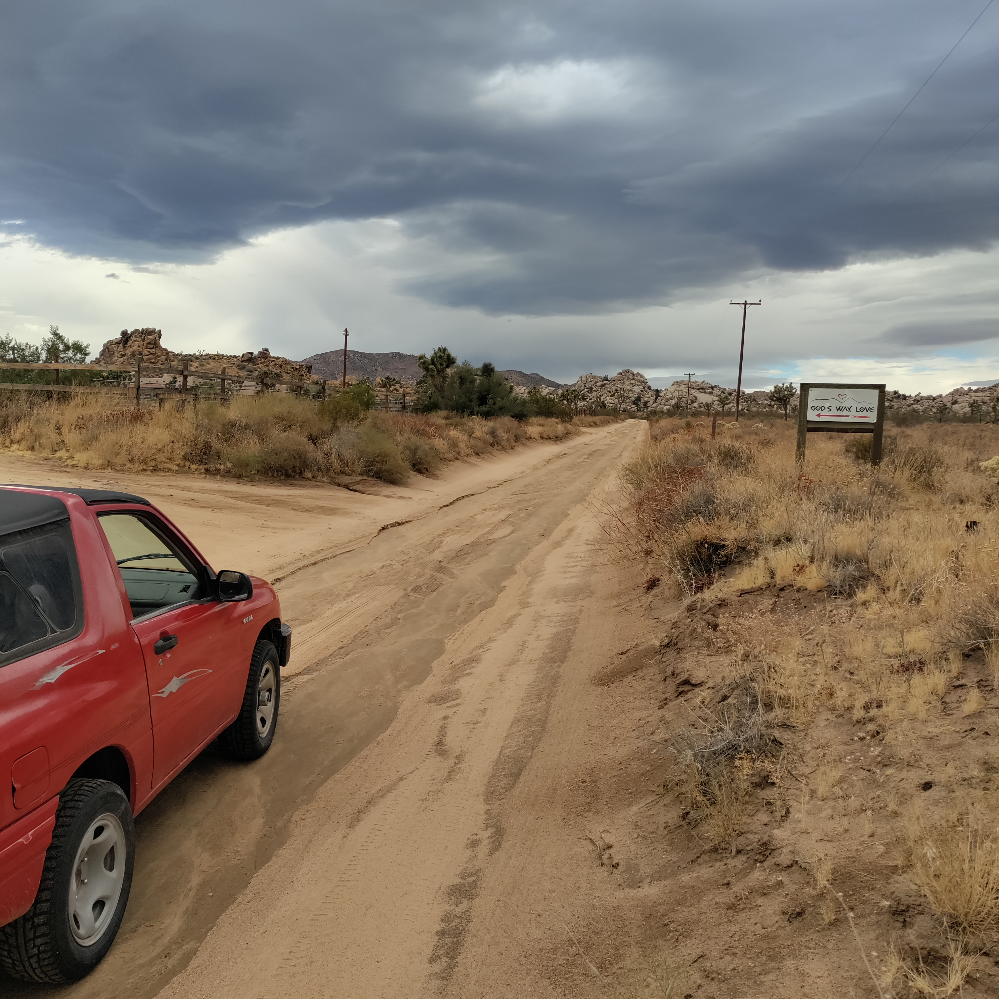
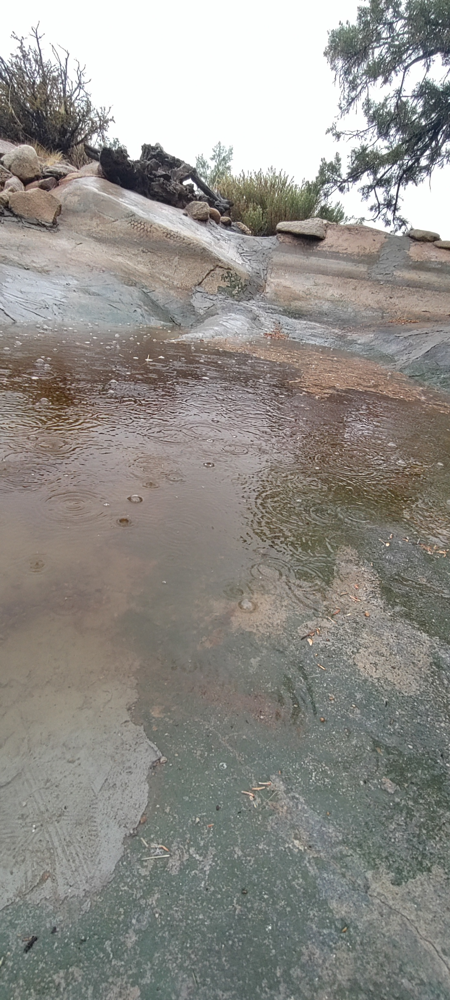
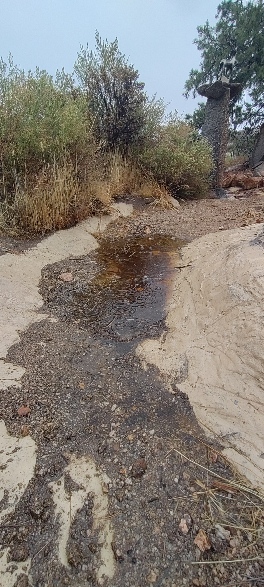
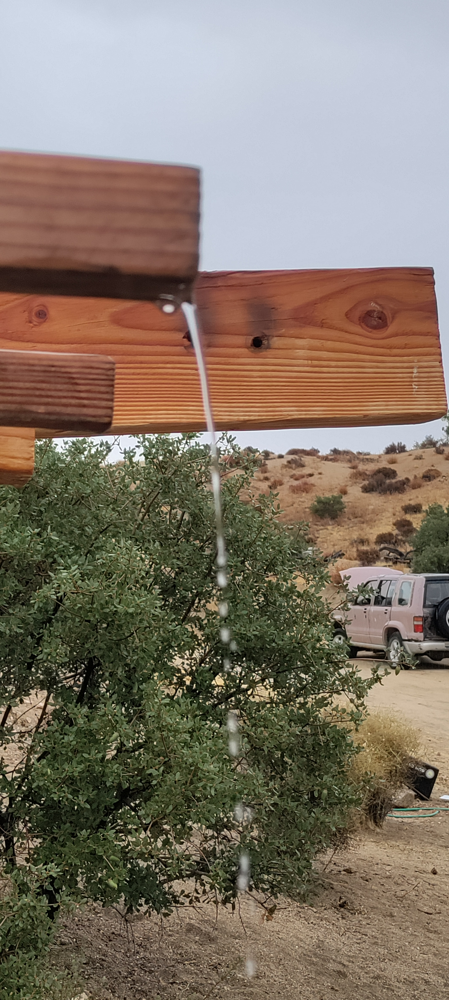
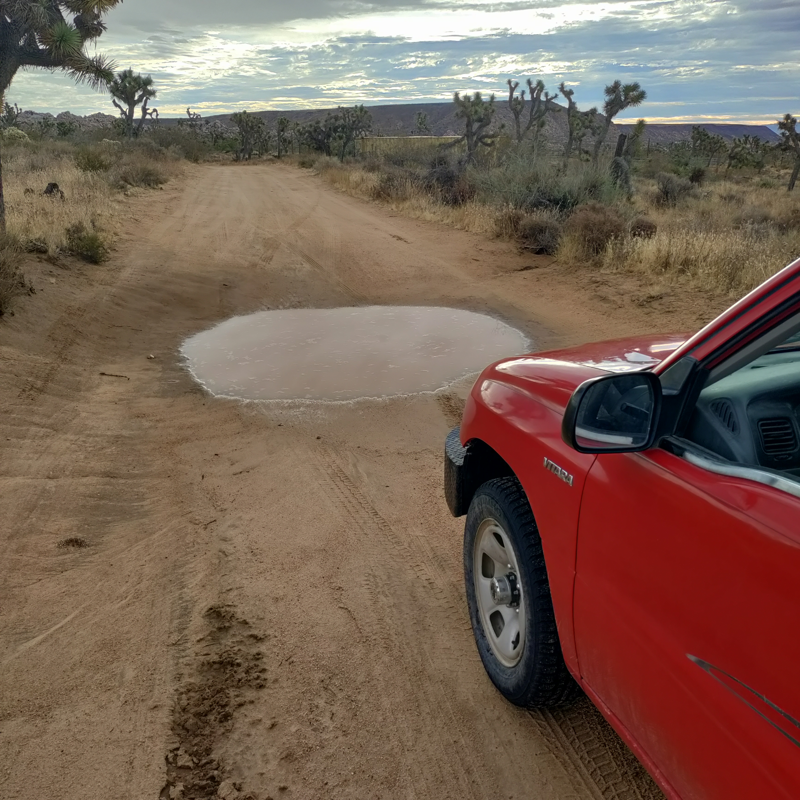

Field Report 017 · Land & Ecology
First real
rain of the
season!
Tropical Rain Reaches Boulder Gardens September 6–7, 2026 An unusually strong early-September rain event for the Mojave Desert, delivering roughly half an inch of rain — more than the area typically receives during the entire month of September.

Three days later the ground is still wet!
A significant late-summer rainstorm passed over Boulder Gardens and the surrounding Pioneertown high desert on September 6, bringing roughly half an inch of rain to the 92268 area.
Nearby weather observations indicate approximately 0.45–0.50 inches (11–13 mm) of rainfall, with most of it falling during the morning and afternoon of September 6. Rainfall in the desert can vary considerably over very short distances, so the actual total at Boulder Gardens may have been somewhat different.
The rain was part of a larger Southern California weather event caused by tropical moisture from Hurricane Marie, which remained far offshore in the eastern Pacific. Moist tropical air interacting with an upper-level weather system produced widespread showers and scattered thunderstorms across the region.
The storm produced a striking change in conditions at Boulder Gardens. After warm, dry weather on September 5, temperatures fell into the upper 60s and low 70s during the rain, while humidity climbed dramatically. Clouds, mist and intermittent heavier rainfall persisted through much of Sunday before conditions began clearing on Monday.
Weather Summary
September 5 — Before the storm
Warm and dry. Approximately 84°F high / 64°F low
September 6 — Main rain event
Cool, cloudy and humid with periods of moderate to heavy rain. Approximately 0.45–0.50 inches of rainfall in the Pioneertown area. Temperatures remained mostly in the 60s and low 70s during the storm.
September 7 — Clearing
Scattered clouds and lingering tropical humidity, with temperatures recovering into roughly the low 80s
September 8 — After the storm
Dry and much warmer again, with temperatures approaching 90°F
For Boulder Gardens, a half-inch summer rain is ecologically important. Water temporarily collects in rock basins, washes and depressions; soil moisture increases; dormant plants can respond rapidly; and the property's water-harvesting landscape becomes visible in action. In an arid environment, a storm lasting only a few hours can have effects that remain visible for days or weeks.
Photographic Record
The work, seen in place
Selected photographs from the private FieldStation source record.




System Thread
Related Fieldstation records
Public synopsis derived from Boulder Gardens Fieldstation Workbook source record FR017. Detailed equipment records, calculations, unresolved questions, and corrections remain in the workbook.